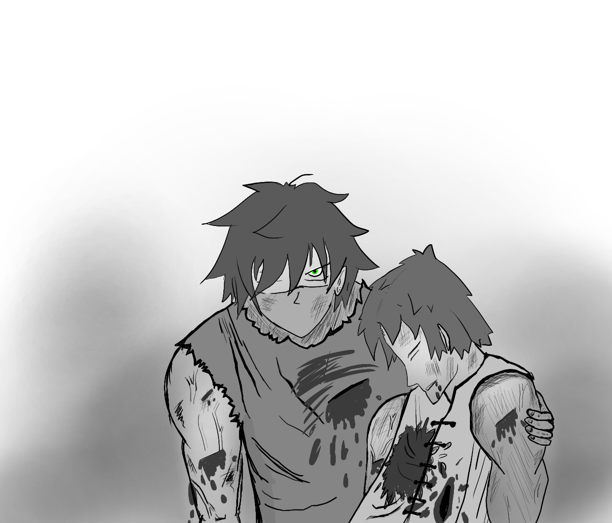

As the preparations for the war went on in full swing, Artemus knew that they would need immense resources to combat the incoming armies. However, with the limited number of horses and men that he had, Artemus simply didn’t have the time to make multiple trips to the Zetopia. However, he realised that such trips could be made in time, only if he would take the path shorter than the one they earlier took to reach the village. Artemus took a map and traced out all the nearby cities, and the distance of the paths between them. Upon tracing it out, he realised that what lay in front of him was in fact…. A Tree! Now, he needed to first visit Zetopia to collect armour, then Barada to collect weapons, and then to finally to Shaki, known for its enchanting skills to enchant the armour and the weapons. Artemus had to find the shortest path from Kerman to Shaki, while first visiting Zetopia and Barada. Artemus smirked as this was a problem well known, and familiar to him. He could simply use the Dijkstra Algorithm between Kerman and Zetopia, Zetopia and Barada, Barada and Shaki, and to finally return from Shaki to Kerman.
Now, he marks the distance between Kerman and all the other villages on the map as Infinity, to denote that he hasn’t visited those cities yet. Now, he selects the CurVil as the current village, and the distance to the current village as 0. Now, he updates the distance from the current village to every other unvisited village that is directly connected to it as the sum of the distance between the current city and that city summed with the distance of the current city. Now, he relabels the distance to that node as this obtained sum if this sum is lesser than the value that was previously allotted to that node, otherwise it remains unchanged. Thus, we are relabelling the path to the visitable villages if it is lesser than the path that already reaches them, and marking the node that we reach that path from. Now, he marks the current village as visited, and moves on to the village that is unvisited and has the minimum distance label from the current village.
He continues this process until he marks the village of Zetopia as visited. Now, he traces back the cities that he used to find the minimum distance till Zetopia, and thus he has successfully obtained the shortest path between the two villages.
Since he needs to independently find the minimum distance between the pair of villages, he repeats this process for all the pairs, and obtains the shortest possible path. This did great wonders to them, as they were able to gather a large number of magic scrolls, cannons, traps, swords, and much more to better prepare for the impending danger….
As Artemus stood in the deserted land, that would soon become a battlefield, he knew that this was the moment he had been waiting for, this was the only chance he had… The silence in the land was broken, as he suddenly heard the soare sound of the arrival of the King’s battalion. However, Artemus was not afraid…. From the numerous villages that he had visited, he had assembled a large number of tools and weaponry, and also managed to gather enough troops to defeat the small section of the King's army that had come there that day. Suddenly, one soldier of Artemus' army shouted, “I see them approaching…. They should be here soon.”
And within a few minutes, they saw the Royal Army in front of them. However, the numbers in Artemus' army seemed to be pale in front of the Royal Army. Despite this, Artemus was confident in the men that he had gathered. His army stood in the formation that he, Aegeus and Carak had strategized over for 2 days. A large number of Archers stood atop a large platform, the cavalry stood on their shining horses, the infantry in their armour held their brilliant swords, as they shouted, “Glory to the Ultor.”
Laseen’s army stood before them. Apart from the Cavalry and infantry, it was also armed with the most accomplished State Alchemists and Magicians. Artemus knew that they would be the hardest block in their path to victory. As Laseen’s army came running forward, shouting “In the name of the Kingdom of Malazan!!”, the Archers who had hid behind the platform started shooting arrows on the enemy army. Artemus watched with a smirk on his face as he saw the running bodies turn into corpses. However, soon the enemy soldiers realised this enemy force, and held their shields up while running towards their enemy.
When the enemy army came close enough that using Archers could hurt their own, Artemus ordered for the activation of hidden trench that he had taken his time to set up, and took advantage of the knowledge of the terrain they were fighting on. Laseen, sitting on top of the platform in his camp, as well as the Generals stood in disbelief as they saw a large portion of their army fall into the large pits right in front of their eyes! Artemus smiled as he could see the advantage that was held by Laseen fall right in front of his eyes. It was at this moment, that he shouted at the top of his lungs, “Treacherous Vizier! I am the son of Daseem Ultor and I have returned, to punish you for the treachery that you committed against my father seventeen years ago.”
Laseen’s face suddenly grew pale. He only knew that there was some rebellion against him being organised, as was reported by Kaleen, who worked under him. However, this was the last thing that he ever expected to see with his own eyes! After giving the call for vengeance, the Prince, who considered his life equal to that of the rest of his army, jumped to rush towards the now unprotected and exposed Vizier’s battalion. This is the moment, when the general of Vizier’s army shouted, “Unleash the Chimeras!!” Hearing this statement, within the small frame of time, the Prince’s army froze. They had conflicting thoughts in their minds - Chimeras were something that was considered mythical. The fire breathing creatures, with the body of a lion, the head of a goat, the tail of a snake’s body, indeed stood in front of them, summoned by the State Alchemists, who had unlocked the art to summon them, and these fearsome creatures ran towards the Prince with fierce growls.
Artemus ordered his army to fire cannons at the beasts. However, they were simply blast away by the breath of fire that the demons released. While Artemus was determined not to lose hope, his other comrades’ faces had turned white with fear. These Chimeras were known to be most ferocious, and the longer the horns on the goat’s head, the more powerful Chimera it was known to be. Artemus knew that it would take a lot of magical power to kill the beasts.
With his magical powers, Artemus could see the strength that every creature possessed - that too in the form of a number! However, he also knew that Chimera had regeneration abilities, and that it’s health, which was initially max, could regenerate at the rate of reg per second. He also had magical scrolls, which each could do a damage of dmgi to the health of the Chimera. However, each scroll could be used only once on a living being, and only one second after a scroll is used, and only if the percentage of its health is lesser than powi
Thus, every time Artemus would use a scroll to hit a Chimera, and the Chimera would regenerate reg amount of health. Now, Artemus would use another scroll on him, if it is possible to use it. Artemus knows that it is possible that he might not even be able to kill some of the monsters. However, he has to be GREEDY in choosing the scrolls, and devises an algorithm to deal maximum damage to the Chimeras. He would use the scroll that can deal the maximum damage out of the ones that are usable, i.e. have value greater than percentage of health of the Chimera, since more the damage, lesser is the health of the Chimera after the attack, and more the number of scrolls that become accessible for further use.
Using this strategy, Artemus was able to defeat a large number of Chimeras. As Artemus was marching forward, slaying the monsters that stood in his path, his best friend Carak stood by his side, slaying the demons along with him. They both had indeed thought of the same algorithm to attack the enemy. However, Artemus watched in horror as he saw Carak attack a Chimera with the largest of all horns, and the scrolls that Carak had were not powerful enough to kill him. When Carak exhausted his scrolls, Artemus watched in horror as the Chimera regenerated his health, and took a large breath to unleash his fire attack on Carak. Artemus screamed, “Noooo”, but it was too late. Carak, with only his sword as the strongest weapon, swung the sword at the mighty lion head of the Chimera, but instead of disappearing in thin air, it unleashed the attack it was preparing at Carak.
In that millisecond, Artemus saw Carak look at him, tears in his eyes, as Artemus recognised the words that he spoke, “It’s ok”, before the fire from the Chimera burnt down Carak’s body. It was at this sight that Artemus lost his mind. He had spent so many years mourning his loss, and another was added right in front of his eyes. He rushed to recover Carak’s burnt body, and he blew into a fit of rage. He didn’t care anymore about the algorithm, about the kingdom, about anything….. He just wanted to kill those who had caused friend’s body to be burnt to a crisp. With fire being sprayed everywhere by the murderous Chimeas, Artemus kept screaming in sorrow… the screams that went unheard.
